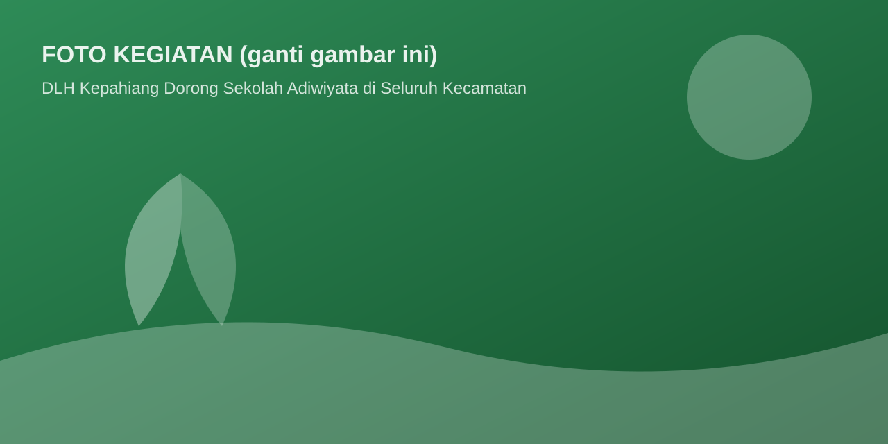
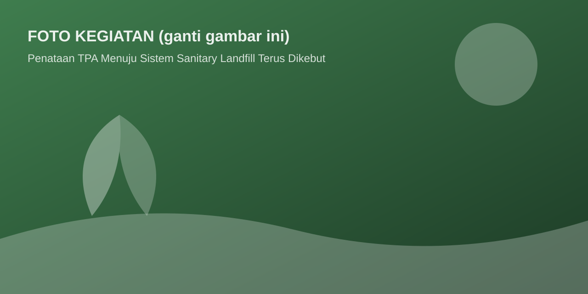
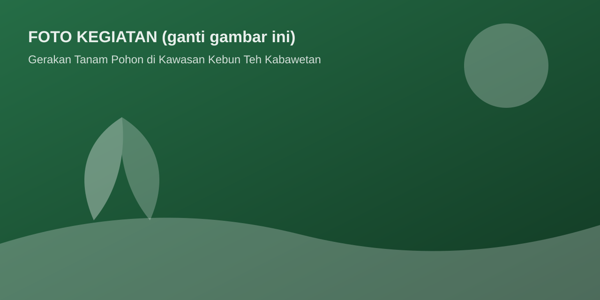

Berita
Aksi Bersih Sungai Musi Hulu, DLH Kepahiang Gandeng Komunitas Peduli Lingkungan
Dinas Lingkungan Hidup Kabupaten Kepahiang bersama komunitas peduli lingkungan dan masyarakat melaksanakan aksi bersih sungai di kawasan hulu Sungai M…
Dinas Lingkungan Hidup Kabupaten Kepahiang bersama komunitas peduli lingkungan dan masyarakat melaksanakan aksi bersih sungai di kawasan hulu Sungai M…

Program sekolah Adiwiyata terus diperluas ke seluruh kecamatan di Kabupaten Kepahiang untuk menumbuhkan budaya peduli lingkungan sejak dini di lingkun…

Peningkatan pengelolaan Tempat Pemrosesan Akhir (TPA) menuju sistem sanitary landfill terus dilakukan agar pengelolaan sampah lebih ramah lingkungan.…

Ribuan bibit pohon ditanam di kawasan Kabawetan sebagai upaya konservasi tanah dan air serta menjaga keindahan kawasan wisata kebun teh.…
Disampaikan kepada masyarakat jadwal pengangkutan sampah wilayah perkotaan Kepahiang untuk bulan Juli 2026. Masyarakat diimbau meletakkan sampah pada …
Pendaftaran calon sekolah Adiwiyata tingkat Kabupaten Kepahiang tahun 2026 dibuka hingga akhir Juli. Formulir dapat diambil di Sekretariat DLH.…
DLH Kabupaten Kepahiang akan menyelenggarakan sosialisasi pemilahan sampah rumah tangga bagi kader lingkungan dan masyarakat Kecamatan Tebat Karai.…
Rangkaian aksi lingkungan serentak dalam rangka peringatan hari lingkungan, melibatkan pelajar, komunitas, dan perangkat daerah.…
Bank sampah adalah salah satu solusi pengelolaan sampah berbasis masyarakat. Artikel ini mengulas cara kerja bank sampah dan manfaatnya bagi ekonomi w…
Sungai yang sehat adalah penopang kehidupan. Artikel ini membahas parameter kualitas air dan peran masyarakat dalam menjaganya.…